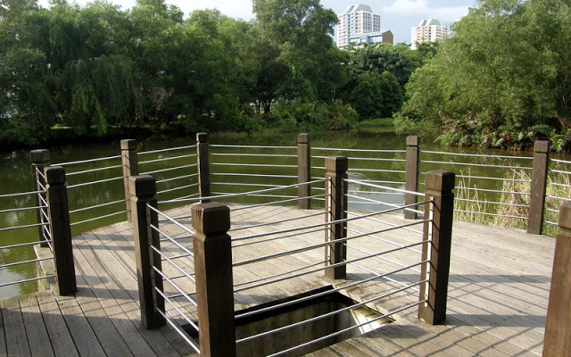
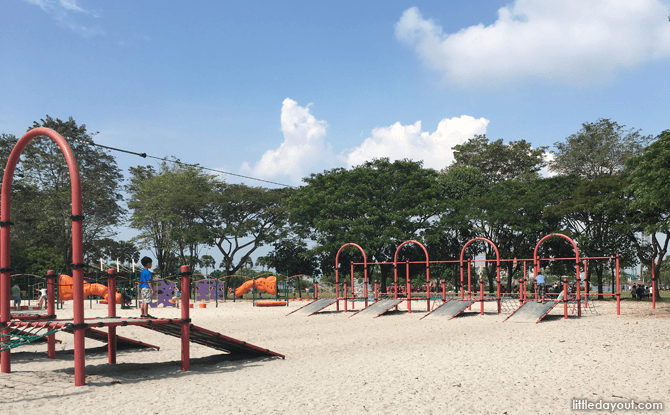

West Coast Park boasts jogging and cycling trails, bird watching, fitness equipment, a dog run, barbecue pits and overnight camping. Open fields are popular for kite flying and pick-up soccer matches. At the same time, children of all ages can be kept busy on some of the best play equipment in Singapore. Here are just a few things that you may want to consider doing during your next trip to West Coast Park.
1. Enjoy the greenery from the Marshland Boardwalk.
The Marshland Boardwalk is a tiny green sanctuary lined with a little lake and wooden path, where you can relax among the shade of the trees. Keep your eyes peeled for various species of wildlife, including birds in the trees, and otters, terrapins and monitor lizards in the waters and mangrove shrubs.

2. Have fun at the Adventure Playground.
Outdoor park playgrounds in Singapore don’t come much bigger or better those at West Coast Park. There are actually six different playgrounds here, filled with equipment suitable for children (and adults) of all ages! This towering climbing pyramid is probably the most iconic feature of the West Coast Park Playground, featuring a tall slide down to the sandy ground below for kids who make their way to the top.
For those who enjoy the feeling of the wind in their hair, be sure to check out the awesome Zip Line play area!

3. Let your dog(s) run wild at the West Coast Park Dog Run!
Why play alone when you can play with your beloved dog friend(s)? West Coast Park Dog Run is known for its amenities, with lots of room for you and your dog(s) to have a jolly good time.
The best part about bringing your dog(s) here is that there is a self-service dog wash station located just a few minutes away from the dog run, complete with shampoo and a blowdryer. The dog run is open 24/7, but we recommend going in the early evening for the best weather conditions.
Now that you know of all the things to look forward to, there are just a few more things left to do! Click on the buttons below to visit a few other essential sites that we have carefully selected, to help you have the best possible outdoors experience.
And with that, you are all ready to head down to West Coast Park! We hope that you have found something useful on this webpage, and that you are excited for the outdoors adventure that you will soon have!
This website was designed by: Chew Wei Sheng from AED23M. Click here to send me an email.